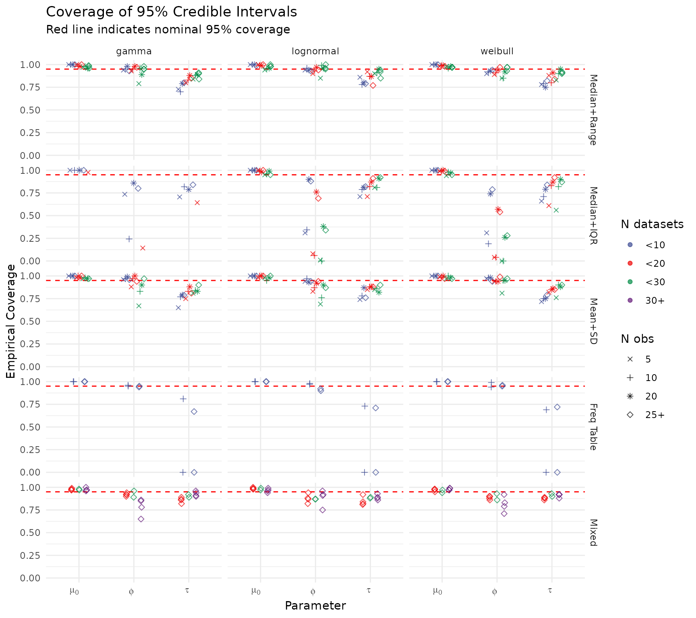
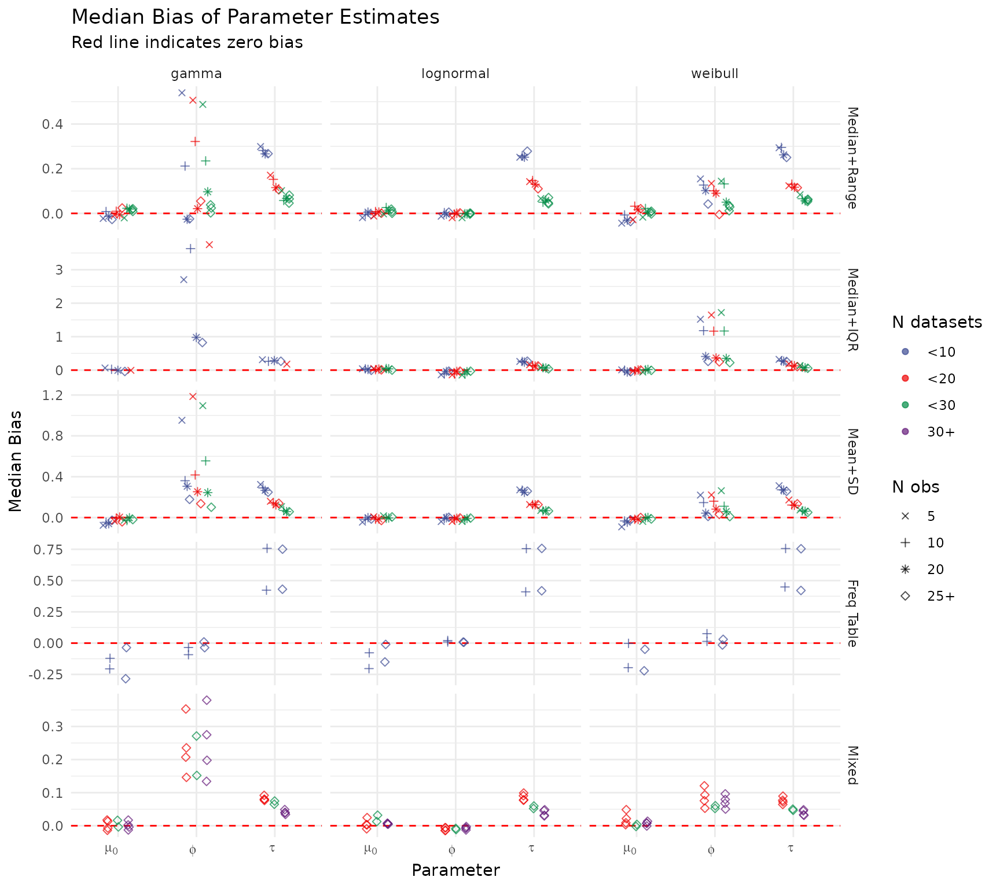
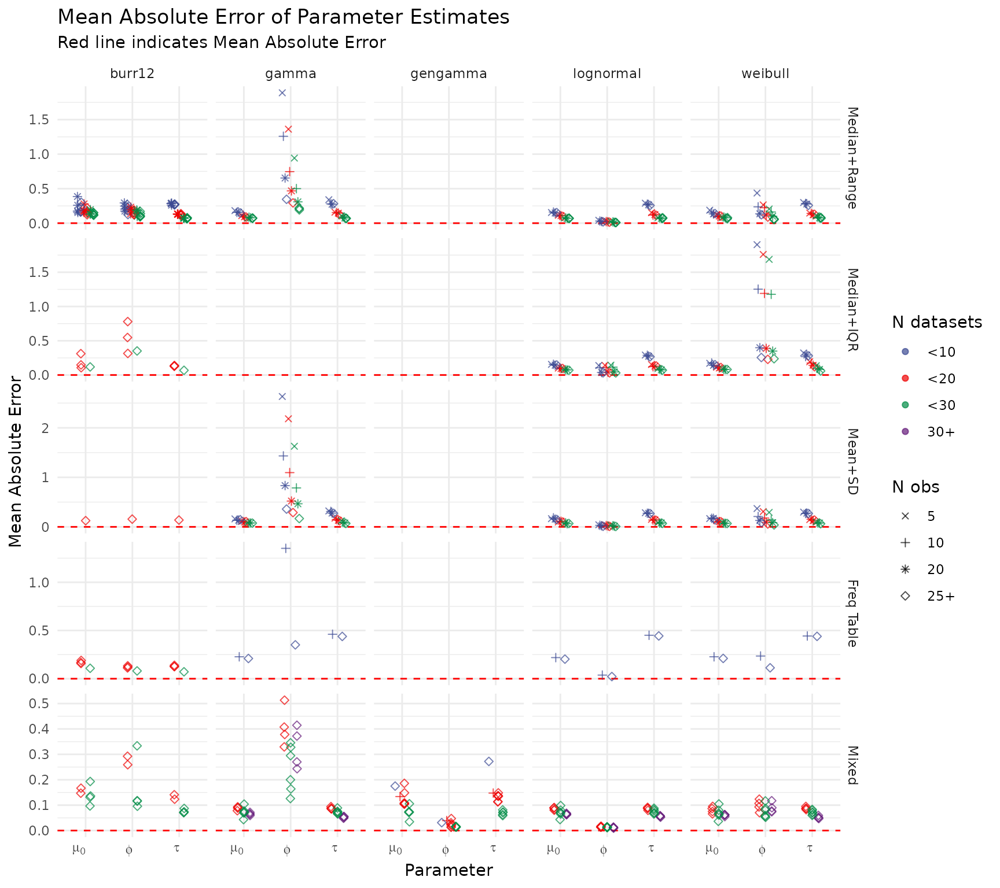
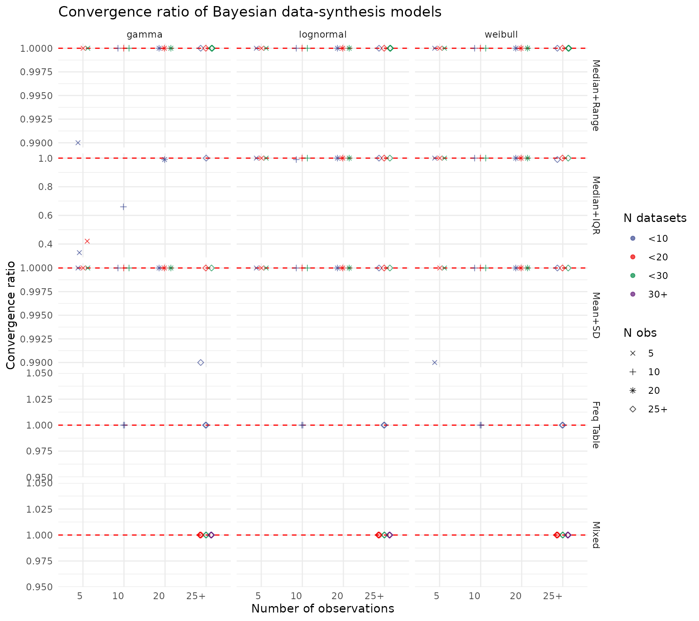

Simulation Study: Evaluating the Hierarchical Bayesian Model
Source:vignettes/simulation_study.Rmd
simulation_study.RmdOverview
This vignette evaluates the performance of the hierarchical Bayesian model across a wide range of simulated scenarios. The study examines how well the model recovers the true population parameters (, , ) when individual observations are unavailable and only summary statistics are reported.
Three parametric families are considered — log-normal, Gamma, and Weibull — along with five summary-statistic types:
summary_type |
Fields reported |
|---|---|
| 1 | Median + range (min, max) |
| 2 | Median + IQR (Q1, Q3) |
| 3 | Mean + SD |
| 4 | Frequency table (rounded counts) |
| 5 | Mixed (multiple types across studies) |
Performance is assessed via credible-interval coverage, median bias, mean absolute error (MAE), and MCMC convergence rates, each broken down by distribution family, summary type, number of datasets, and within-study sample size.
Setup
library(ddsynth)
library(tidyverse)
#> ── Attaching core tidyverse packages ──────────────────────── tidyverse 2.0.0 ──
#> ✔ dplyr 1.2.0 ✔ readr 2.2.0
#> ✔ forcats 1.0.1 ✔ stringr 1.6.0
#> ✔ ggplot2 4.0.2 ✔ tibble 3.3.1
#> ✔ lubridate 1.9.5 ✔ tidyr 1.3.2
#> ✔ purrr 1.2.1
#> ── Conflicts ────────────────────────────────────────── tidyverse_conflicts() ──
#> ✖ dplyr::filter() masks stats::filter()
#> ✖ dplyr::lag() masks stats::lag()
#> ℹ Use the conflicted package (<http://conflicted.r-lib.org/>) to force all conflicts to become errors
library(ggsci)Load Pre-computed Results
Running the full simulation study is computationally intensive. The
results used here were generated by
run_simulation_study_generalized() and saved to disk.
res_out <- readRDS("simulation_results_output_generalized.rds")Build the Scenario Library
generate_scenario_library() constructs the full
factorial grid of scenarios used in the study, covering homogeneous,
mixed,
varied-,
and frequency-table conditions.
cat("Generating scenario library...\n")
#> Generating scenario library...
scenarios <- as_tibble(generate_scenario_library(
include_homogeneous = TRUE,
include_mixed = TRUE,
include_varied_n = TRUE,
include_freq_table = TRUE
)) %>%
mutate(
summary_type = case_when(
summary_type_1_prop == 1 ~ 1L,
summary_type_2_prop == 1 ~ 2L,
summary_type_3_prop == 1 ~ 3L,
summary_type_4_prop == 1 ~ 4L,
.default = 5L
)
)
scenarios$scenario_idx <- seq_len(nrow(scenarios))
cat("Generated", nrow(scenarios), "scenarios\n")
#> Generated 156 scenariosSummarise Results
create_results_summary() aggregates the per-replicate
outputs (restricting to converged runs) and joins the scenario metadata.
The resulting table contains, for each scenario:
- Coverage — empirical 95% credible-interval coverage for , , and (nominal target: 0.95).
- Median bias — median of (posterior median true value) across replicates (target: 0).
- MAE — mean absolute error across replicates.
- IQD — mean integrated quadratic distance between the true and estimated predictive distributions.
Coverage of 95% Credible Intervals
Each point represents one scenario. Points near the dashed red line (0.95) indicate well-calibrated uncertainty quantification. Points are coloured by the number of datasets and shaped by the within-study sample size.
create_coverage_plot(summary_res)
Median Bias of Parameter Estimates
The dashed red line at zero indicates unbiased estimation. Systematic departures from zero suggest that certain data configurations (e.g., very small or sparse summary types) introduce recoverable or persistent bias.
create_bias_plot(summary_res)
Mean Absolute Error of Parameter Estimates
MAE captures the magnitude of estimation error irrespective of direction. Smaller values across larger datasets and richer summary types confirm that pooling information across studies reduces estimation uncertainty.
create_mae_plot(summary_res)
MCMC Convergence Rates
The convergence plot shows the proportion of simulation replicates where all chains reached and the effective sample size was adequate. Values at the dashed red line (1.0) indicate perfect convergence across all replicates. Lower rates in sparse conditions (few datasets, small ) highlight where the model may require more informative priors or additional iterations.
create_convergence_plot(res_out, scenarios)